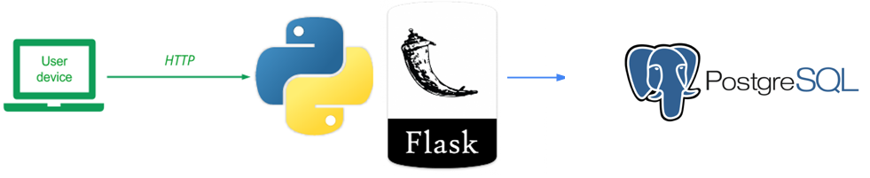
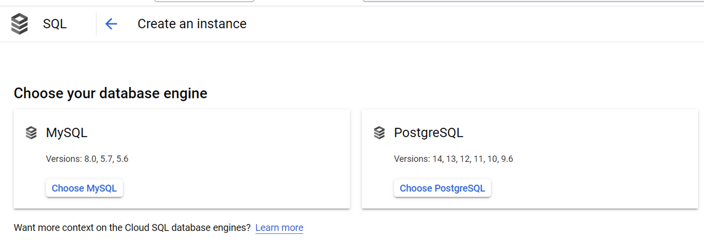
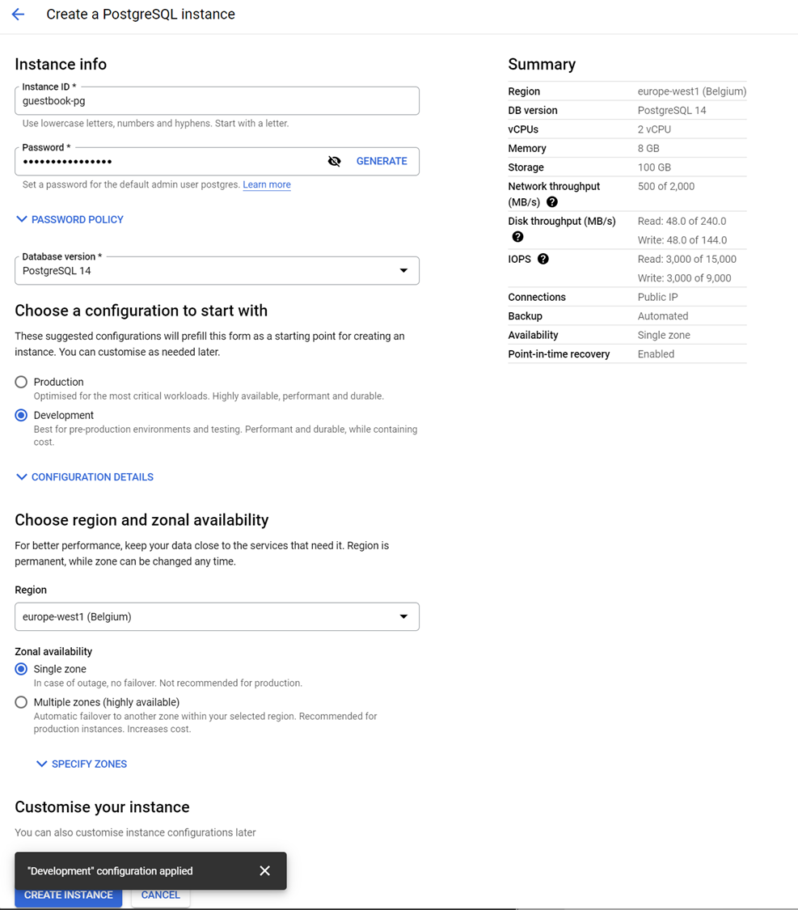
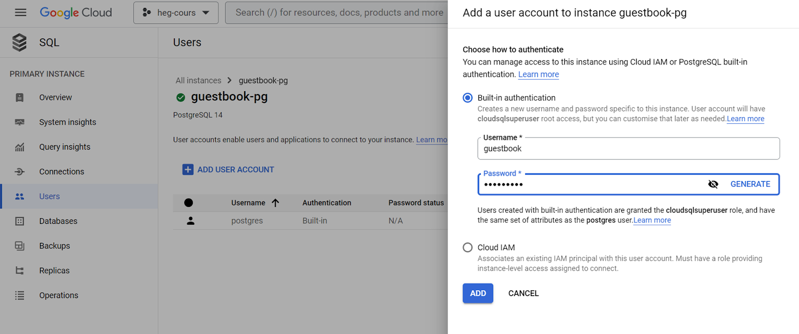
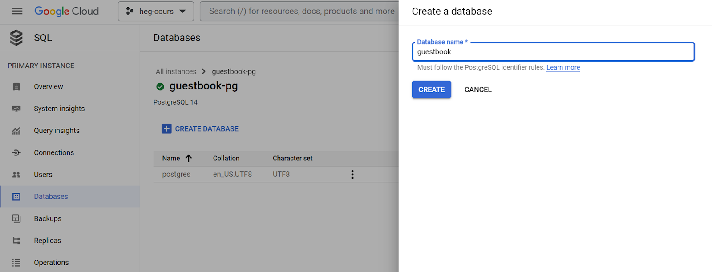
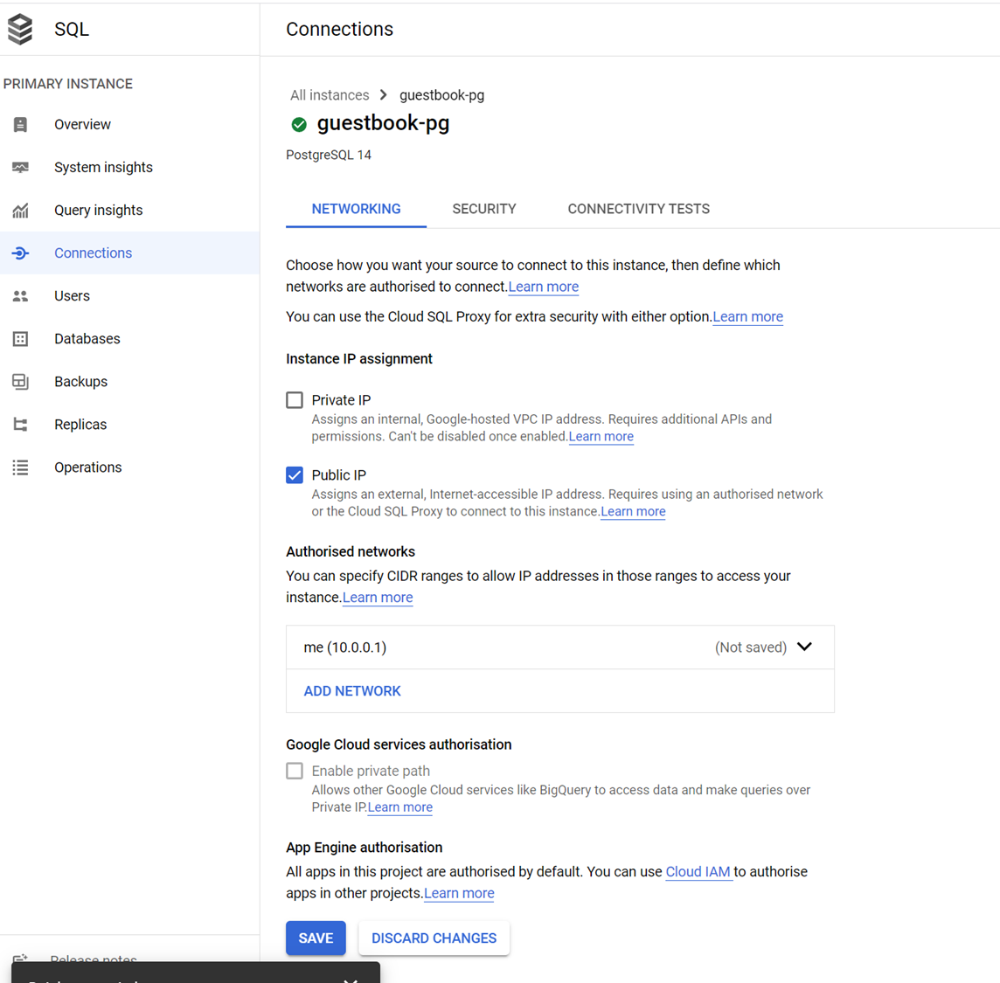
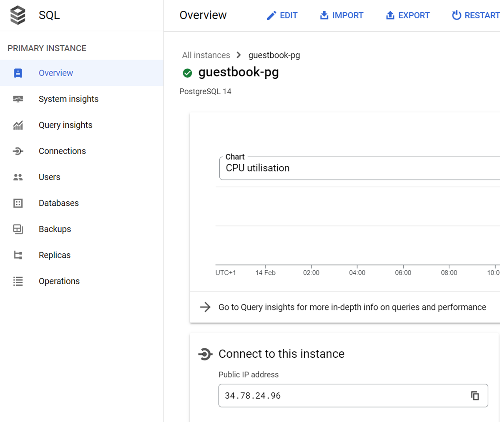
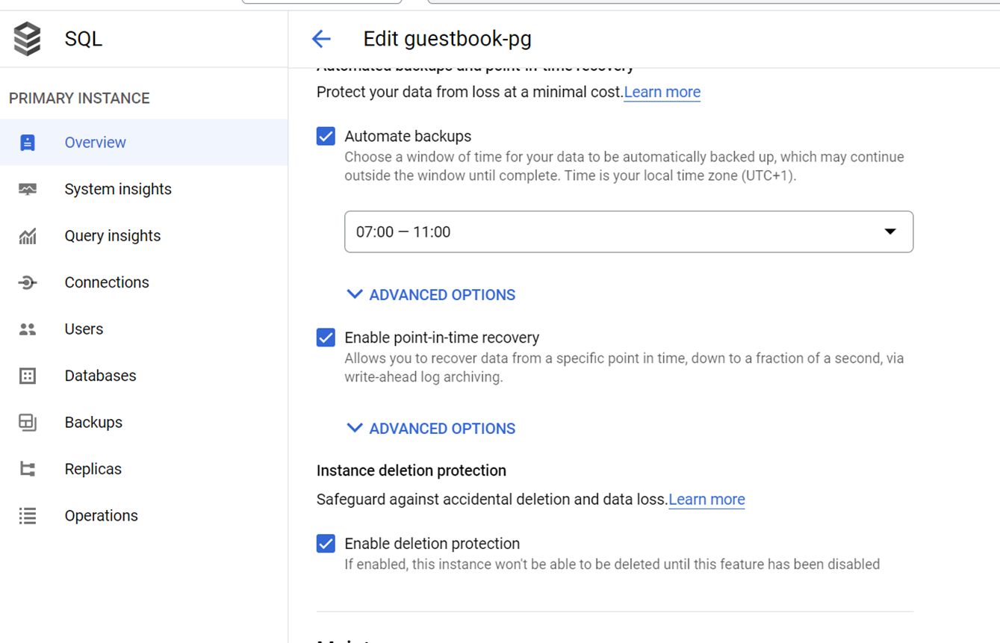
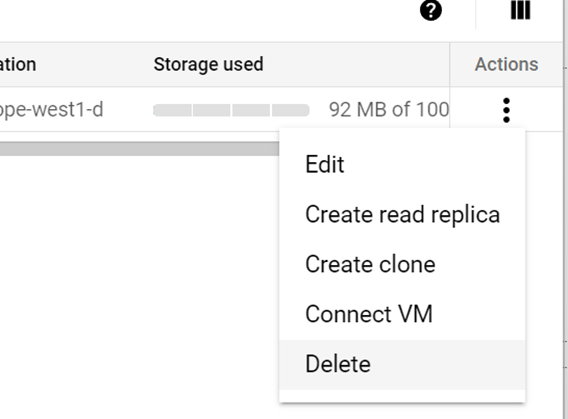
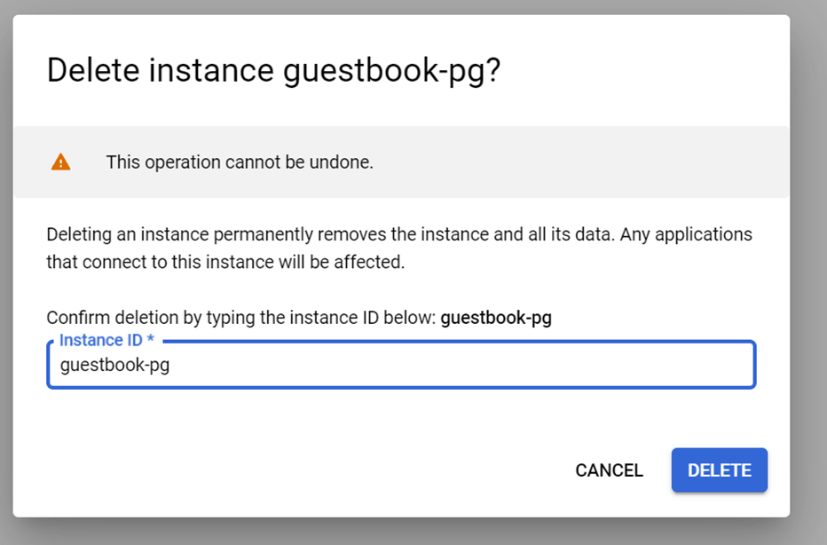

The previous version of the Guestbook stores the model data in a sqlite3 database. This version provides a new modularized version od the model adapter to support querying a PostgreSQL server. To view the code, change into its directory within the repository.
cd guestbook-src/02_mvp_modules_sqlite3
The directory structure shown below shows only the files of interest for this lab. There is a .env.sample file which will help with configuring the environment variables for the database connection. In addition, in gbmodel directory there is a new postgresql implemetnation (model_sql_postgres.py), which has to be enabled in the initialization file for the package (__init__.py)
02_mvp_modules_sqlite3 ├── gbmodel │ ├── __init__.py │ └── model_sql_postgres.py └── .env.sample
Use Google CloudSQL to create a postgresql instance to which we will connect with Python.
Either use your Google Cloud account or a test instance via the following
You can follow the Lab and still have time remaining to do the tests with PostgreSQL. It is recommended to start instant creation at the beginning since it can take 5-10 minutes.

Create a unique instance-name, generate a password AND REMEMBER IT. (If you are on your own account you can reduce cost by setting Developement and Single zone)

Once the instance is created we can add another user.

This will be the user and password we will provide python to connect
Use the same name as for the user.

Use a service like https://ifconfig.me/ to get your public ip and add it to the authorised networks.

Copy the public ip address of your server instance

You now have all the information to connect from an external program like Python.
We will setup the changes required to connect to a PostgreSQL server instead of a local sqlite3 database.
Edit __init__.py to use the PostgreSQL backend by setting the correct value in the mode_backend.
# model_backend = 'sqlite3'
model_backend = 'postgres'
# model_backend = 'pylist'As the package constructor shows, we have implemented a new postgres backend. The code for the backend is in model_sql_postgres.py. The part that implements the DDL (Data Definition Language) is shown below. As the code shows, the abstract base class Model is first imported along with the psycopg package. There is no variable for a file name. Instead, it was replaced by the creation of the database connection string, which is assembled by loading information from environment variables. We are using the dotenv package, to simplify loading environment variables from a .env file. If you compare the code with the sqlite3 version you will notice that this version uses the Python with statement that allows to not explicitly call the close cursor and close connection methods, as the with block will do it for us. Additionally, we had to add a connection.rollback() in the except code, before being able to add a change in the current transactions. PostgreSQL supports transactions even for DDL.
from datetime import datetime
from .model import Model
import psycopg
import os
from dotenv import load_dotenv
load_dotenv()
DB_CONNECTION = "host=%s port=%s dbname=%s user=%s password=%s" % (os.getenv('DB_HOST'), os.getenv('DB_PORT'), os.getenv('DB_NAME'), os.getenv('DB_USER'), os.getenv('DB_PASS'))
class ModelSqlPostgres(Model):
def __init__(self):
# Make sure our database exists
with psycopg.connect(DB_CONNECTION) as connection:
with connection.cursor() as cursor:
try:
cursor.execute("SELECT count(*) FROM entries")
except psycopg.errors.UndefinedTable:
connection.rollback()
cursor.execute("CREATE TABLE entries (id serial, name text, email text, signed_on timestamp, message text)")
connection.commit()You need to create the .env file and configure the correct information. Copy the .env.sample to .env and provide the correct information.
DB_HOST=localhost
DB_PORT=5432 # Default PostgreSQL port
DB_NAME=guestbook
DB_USER=guestbook
DB_PASS=guestbookThe rest of the code in model_sql_postgres.py implements the DML (Data Manipulation Language) part of the backend. As the code shows, the select() method simply returns all rows from the entries table as a list of lists. We had to add an id column, to have a primary key. The datetime object conversion is done automatically as long as the type of data is timestamp.
The insert() method takes the (name, email, message) strings, then generates a timestamp (datetime.now()) before inserting them all into the entries table.
def select(self):
"""
Gets all rows from the database
Each row contains: name, email, signed_on, message, id
:return: List of lists containing all rows of database
"""
with psycopg.connect(DB_CONNECTION) as connection:
with connection.cursor() as cursor:
cursor.execute("SELECT name, email, signed_on, message, id FROM entries")
return cursor.fetchall()
def insert(self, name, email, message):
"""
Inserts entry into database
:param name: String
:param email: String
:param message: String
:return: True
:raises: Database errors on connection and insertion
"""
params = {'name':name, 'email':email, 'datetime':datetime.now(), 'message':message}
with psycopg.connect(DB_CONNECTION) as connection:
with connection.cursor() as cursor:
cursor.execute("INSERT INTO entries (name, email, signed_on, message) VALUES (%(name)s, %(email)s, %(datetime)s, %(message)s)", params)
connection.commit()
return True
Log back into a linuxlab machine or your local Ubuntu VM that you are running the web application on. Change into the repository that contains the code.
cd guestbook-src/02_mvp_modules_sqlite3
As before, create a Python 3 virtual environment and install the packages specified in requirements.txt (e.g. flask)
We have two additional requirements in order for postgresql to work with python
psycopg[binary] # library to connect to postgresql
python-dotenv # top simplify loading of environment variables from .env filespython3 -m venv env source env/bin/activate pip install -r requirements.txt
Or on windows with PowerShell
python -m venv env .\env\Scripts\Activate.ps1 pip install -r requirements.txt
Then, start the server.
python app.py
Visit the site as before and add an entry that includes your email address in it and the message "python/flask MVP PostgreSQL#1". Then, type "Ctrl+c" to stop the server.
Start the server again. The original message should still appear as it has been read from the database server. Add another entry using your email address and the message "python/flask MVP PostgreSQL#2".
Then, type "Ctrl+c" to stop the server again.
To explore the content of the database you can connect with a Database Tool, or directly use the cloud shell.
Specify your created username
gcloud sql connect guestbook-pg --user=guestbook --quietIt is important to not forget the ; at the end of an SQL statement.
guestbook=> SELECT * FROM entries;Adapt to your information
guestbook=> INSERT INTO entries (name, email, signed_on, message) VALUES ('Demo', 'demo@example.com', now(), 'hello from console');1 Remove deletion protection

2 Delete and confirm
On the main SQL overview page


Done!